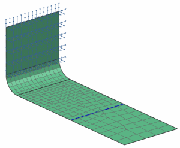

Open the Simulation file
This activity continues with the Simulation and result files you saved when you completed the Response Simulation - Solution setup activity. Make sure the Simulation file you saved in that activity is open in NX and the Simulation file is the displayed file. If the Simulation file is not the displayed file, do the following:
 Simulation Navigator
Simulation Navigator
-
Simulation File View
-
 rs_bracket_1_sim1
rs_bracket_1_sim1 -
 Make Displayed Part
Make Displayed Part -
